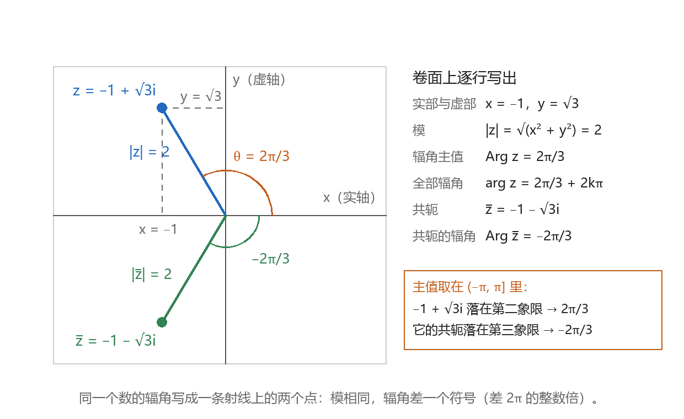
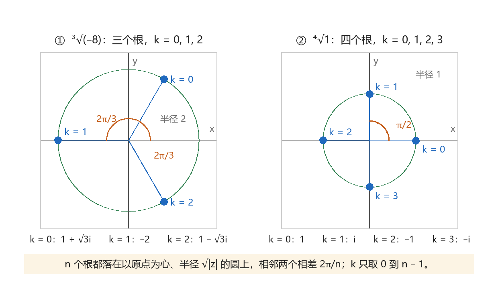
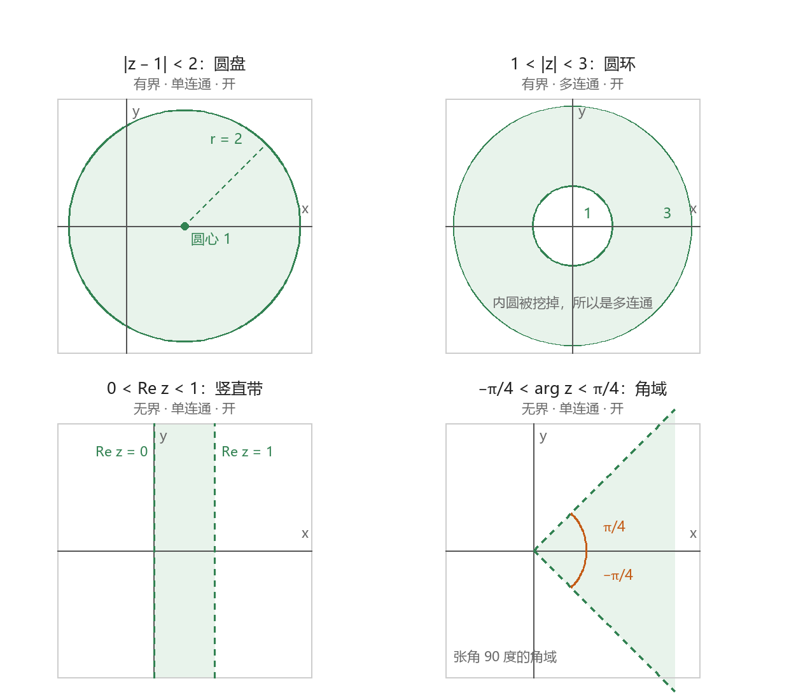

复数的运算与几何表示
本节目标：能算出复数的四则与共轭、模与辐角主值，写出全部 n 次方根，并把圆盘、圆环、半平面写成不等式。
卷面考哪些
按大纲的顺序，本课排在绪论之后、初等函数之前。这一轮是学完初等函数与可导解析之后回头补的编号课，所以下面每一节都自成一格：哪一节忘了就单翻哪一节，与前后课程的接头放在每节末尾一句。
公开试卷里，本章的分数全落在运算上，固定出现在四处：
- 解答题第 1 题（6 分）：给一个分式或乘积式的 z，求它的模和辐角。参考答案按「化简 2 分、模 2 分、辐角 2 分」给分，旁边注明「只有主值得 1 分」。
- 填空题（3 分）：问辐角主值，问某点绕原点旋转之后的复数，问 1+z+z^2+\cdots 的值。
- 解答题第 2 题（6 分）：求 \sqrt[3]{-8} 这类方根，几个值都要写全。
- 选择题（3 分）：给一个不等式或绝对值方程，问它表示什么区域、什么曲线。
| 卷面问法 | 分值 | 要交的东西 |
|---|---|---|
| 求 z 的模和辐角 | 6 | 化简后的 x+iy、|z|、\arg z = \operatorname{Arg} z + 2k\pi |
| 求辐角主值 | 3 | 一个落在 (-\pi,\pi] 内的角 |
| 求 n 次方根 | 6 | n 个值，按 k = 0,1,\dots,n-1 列全 |
| 不等式表示的区域 | 3 | 有界或无界、单连通或多连通、开还是闭 |
复数与四则运算
复数写成 z = x + iy，其中 x, y 为实数，i^2 = -1。x 叫实部、y 叫虚部，记 \operatorname{Re} z 与 \operatorname{Im} z。
四则的算法与实数相同，只在出现 i^2 时换成 -1：
- 加减：实部与实部加，虚部与虚部加。
- 乘：按多项式展开，i^2 换成 -1，再把实部、虚部分别并起来。
- 除：分子分母同乘分母的共轭，把分母化成实数，这一步叫分母实数化。
共轭是虚部改号：\overline{z} = x - iy。它的用处集中在四条：
| 式子 | 等于 |
|---|---|
| z + \overline{z} | 2x |
| z - \overline{z} | 2iy |
| z\,\overline{z} | |z|^2 |
| \overline{z_1 z_2} | \overline{z_1}\,\overline{z_2} |
卷面上的三个算例，都靠这几条：
- \dfrac{2+i}{1-2i} = \dfrac{(2+i)(1+2i)}{5} = \dfrac{2+5i-2}{5} = i。分母实数化之后恰好只剩一个 i。
- \dfrac{(1+i)^3}{(1-i)^3}：先把商化成 \dfrac{1+i}{1-i} = i，再立方得 i^3 = -i。逐个乘开会多写三行。
- 设 z = -i，求 1 + z + z^2 + z^3 + z^4：由 z^2 = -1、z^3 = i、z^4 = 1 得四项正负相抵，答案是 1。
几何上有两条要记：加法按平行四边形合成；乘法是模相乘、辐角相加。特别地，乘 i 等于绕原点逆时针转 \dfrac{\pi}{2}，模不变。填空里问「2023 - i 绕原点逆时针旋转 \dfrac{\pi}{2} 后是什么」，就是算 i(2023 - i) = 1 + 2023i。
模与辐角主值
z = x + iy 在复平面上对应点 (x,y)，它到原点的距离叫模：
它与正实轴的有向夹角叫辐角 \arg z，逆时针取正号、顺时针取负号。同一个点绕一圈又回到原处，所以 \arg z 有多值，彼此差 2k\pi；把范围卡在 (-\pi,\pi] 之内的那一个叫主值，记 \operatorname{Arg} z。反过来由模与辐角求实部、虚部，用 x = r\cos\theta、y = r\sin\theta。
求主值按点落在哪个象限分情况，四种写法都要会：
| 点在哪 | 主值怎么算 | 例 |
|---|---|---|
| 第一象限 x>0,\ y>0 | \arctan\dfrac{y}{x} | 1+i 得 \dfrac{\pi}{4} |
| 第二象限 x<0,\ y>0 | \pi - \arctan\dfrac{|y|}{|x|} | -1+\sqrt3 i 得 \dfrac{2\pi}{3} |
| 第三象限 x<0,\ y<0 | -\pi + \arctan\dfrac{|y|}{|x|} | -1-i 得 -\dfrac{3\pi}{4} |
| 第四象限 x>0,\ y<0 | -\arctan\dfrac{|y|}{|x|} | 1-i 得 -\dfrac{\pi}{4} |
四条轴上的点单独记：1 是 0，i 是 \dfrac{\pi}{2}，-1 是 \pi，-i 是 -\dfrac{\pi}{2}。

assets/img/gen/复数运算-模与辐角-主值与共轭-本机-01.py），许可：本项目自产）模与辐角在乘除之下的变化是后面所有计算的地基：
第二式写的是 \arg：两边本来就是值的集合，各带 2k\pi，相加仍落在这个集合里。换成主值 \operatorname{Arg} 就不成立了——两个主值相加可能超出 (-\pi,\pi]，要减一个 2\pi 或加一个 2\pi 才回到主值。选择题里「\operatorname{Arg}(z_1z_2) = \operatorname{Arg} z_1 + \operatorname{Arg} z_2 未必成立」考的就是这一句。
一是辐角只写主值。参考答案在辐角这一行标着「只有主值得 1 分」，要写的是 \arg z = \operatorname{Arg} z + 2k\pi，k \in \mathbb Z。二是模没有化简：\sqrt{40} 要写成 2\sqrt{10}。
三角表示与指数表示
把模与辐角拼起来，同一个 z 有两种写法：
前一个叫三角表示，后一个叫指数表示，两者之间的桥是欧拉公式 e^{i\theta} = \cos\theta + i\sin\theta。
互相换算各三步：
- 代数形式化成指数形式：算模、算主值、写成 re^{i\theta}（要写全部值时补 2k\pi）。
- 指数形式化回代数形式：把 e^{i\theta} 换回 \cos\theta + i\sin\theta，实部是 r\cos\theta、虚部是 r\sin\theta。
写成指数形式之后，乘除只剩两个动作：
| 运算 | 指数形式的写法 | 结果 |
|---|---|---|
| 乘 | r_1e^{i\theta_1} \cdot r_2e^{i\theta_2} | r_1r_2\,e^{i(\theta_1+\theta_2)} |
| 除 | \dfrac{r_1e^{i\theta_1}}{r_2e^{i\theta_2}} | \dfrac{r_1}{r_2}\,e^{i(\theta_1-\theta_2)} |
乘 e^{i\varphi} 的几何意思是把整个图形绕原点转 \varphi（\varphi>0 逆时针），模不变。上一节那道旋转填空，算 i(2023-i) 与写成 \left|2023-i\right|e^{i(\operatorname{Arg}(2023-i)+\pi/2)} 是同一件事。
这一节与后面课程的接头：e^{i\theta} 就是初等函数那一课里 e^z = e^x(\cos y + i\sin y) 的雏形，把衰减因子 e^x 乘上就得到 e^z。第 4 课已经讲过 e^z 的整套性质，回头补到这里，接上的是 e^{i\theta} 从哪里来。
乘幂与方根
指数形式下乘方最省事：模取乘方、辐角乘上次数，
例：(-1+i)^{10}。先化指数形式 -1+i = \sqrt2\,e^{\frac{3\pi i}{4}}，于是
同法算出 (-1-i)^{10} = 32i，两者相减得 -64i。这一步是解答题第 1 题的一种考法。
方根要把辐角的多值性带进来。方程 w^n = z 的解写成
其中 r = |z|、\theta 取 z 的任一辐角（取主值最省事）。k 取到 n-1 为止：再往上加，指数里多出的恰好是 2\pi 的整数倍，得到的根与前面某个重合。
这 n 个根有三个可数的特征，落笔后拿它们自查：
- 都在以原点为心、半径 \sqrt[n]{r} 的圆上。
- 相邻两个的辐角差 \dfrac{2\pi}{n}，均匀铺满整个圆周。
- 恰好 n 个，不多不少。
求 \sqrt[3]{-8} 的三步：写成指数形式 -8 = 8e^{i\pi}；套公式得 w_k = 2e^{i\frac{\pi+2k\pi}{3}}；取 k=0,1,2 得

assets/img/gen/复数运算-方根-均匀分布-本机-02.py），许可：本项目自产）只写一个根（把 k 漏掉）是最常见的丢分点，6 分题按「指数形式 2 分、公式 2 分、几个值 2 分」给分。二是算完不核对：取完 k 之后看一眼几个根是不是均匀铺在圆上、辐角是不是差着 \frac{2\pi}{n}，错了当场就能发现。
方根的多值性后面还会遇到两次：第三章的幂函数 z^\alpha 按 \alpha 的类型决定取几个值，洛朗展开里的负幂项也是从这种多值结构里读出来的。
用不等式表示区域
卷面给的是不等式，问的是「它确定什么区域」。先认图形，再答三件事：有没有界、单连通还是多连通、边界含不含。
| 不等式 | 图形 | 边界 |
|---|---|---|
| |z - z_0| = r | 以 z_0 为心、r 为半径的圆周 | 本身就是边界 |
| |z - z_0| < r | 圆盘内部 | 不含 |
| |z - z_0| \le r | 闭圆盘 | 含 |
| r_1 < |z - z_0| < r_2 | 圆环 | 两个圆都不含 |
| \operatorname{Re} z > a | 右半平面 | 不含那条直线 |
| a < \operatorname{Re} z < b | 竖直带 | 两条竖线都不含 |
| a < \operatorname{Im} z < b | 水平带 | 两条横线都不含 |
| \theta_1 < \arg z < \theta_2 | 从原点张开的角域 | 两条射线都不含 |
| |z - z_0| = |z - z_1| | 两点连线的中垂线 | 是一条直线 |
三个判定各有指标：
- 有界：图形能被一个以原点为心的大圆装进去。圆盘、圆环、闭圆盘有界；半平面、竖带、角域无界。
- 单连通：图形里没有洞。圆盘单连通；圆环把内圆挖掉了，是多连通；0 < |z| < 1 也是多连通，它挖掉的是一个点。
- 开闭：严格不等号是开区域，边界不算；写成 \le、\ge、= 才把边界并进来。

assets/img/gen/复数运算-区域-不等式对照-本机-03.py），许可：本项目自产）四道真题就是照这张表答的：
- 1 < |z| < 2：有界多连通区域。
- 0 < \operatorname{Re} z < 1：无界单连通区域。
- -1 \le \arg z \le \pi - 1：无界单连通闭区域，边界那两条射线被 \le 写了进去。
- |z - 1| \ge |z - i|：这是「到 1 的距离不小于到 i 的距离」，取中垂线的一侧，无界单连通闭区域。
同一类题还会问曲线：|z+i| = |z-i| 是实轴这条直线；\bigl|\,|z+i| - |z-i|\,\bigr| = 1 是双曲线，因为到两个定点的距离之差是常数。
解答题第一题的写法
这道 6 分题的题面是一个式子加一句话：「设 z = \cdots，求 z 的模和辐角」。按四步写，每一步都占分：
- 先把 z 化成 x + iy。有分母就乘共轭，有乘方就先用指数形式算乘方。
- 写模 |z| = \sqrt{x^2+y^2}，能开方就开方、能化简就化简。
- 写辐角主值 \operatorname{Arg} z：看象限，按前一节的表算，结果落在 (-\pi,\pi] 内。
- 补全部辐角：\arg z = \operatorname{Arg} z + 2k\pi，k \in \mathbb Z。
以 z = \dfrac{5+i}{2+3i} 为例（卷面原题），参考答案的分步是：
另一类题面把「求模和辐角」换成「计算 z^5」，动作一样，只把第 4 步换成乘方：设 z = \sqrt2 (1-i) = 2e^{-\frac{\pi i}{4}}，则
练习：四条命令核对
Python 标准库 cmath 里复数是内置类型，模与辐角两条命令各对应本节一个结论。跑之前先按公式手算一遍，再对输出。
import cmath, math
z = (2 + 1j) / (1 - 2j) # 分母乘共轭
print(z, abs(z), cmath.phase(z))
w = math.sqrt(2) * (1 - 1j)
print(w ** 5) # 先化指数形式再乘方
for k in range(3): # -8 的三个方根
print(cmath.rect(2, (math.pi + 2 * k * math.pi) / 3))- 第 1 行打出
1j、1.0、1.5707963267948966：这就是 \dfrac{2+i}{1-2i} = i，模为 1，辐角为 \dfrac{\pi}{2}。cmath.phase只给主值，全部辐角要自己补 2k\pi。 - 第 2 行打出
(-22.627...+22.627...j)，即 -16\sqrt2 + 16\sqrt2 i，与手算的 z^5 一致。 - 第 3 行打出
(1+1.732...j)、(-2+0j)、(1-1.732...j)：三个根，虚部就是 \pm\sqrt3。 - 把第 3 行的
math.pi换成-math.pi再跑一次：根集仍是这三个，只有 k 的顺序挪了一位。辐角取主值还是取别的值，根集不变。
没有 Python 时，用 i、\sqrt2(1-i)、\sqrt[3]{-8} 三组数在纸上按上一节那四步走一遍，效果相同。
带走的速查卡
| 要算的 | 公式 | 卷面要点 |
|---|---|---|
| 除法 | 分子分母乘分母的共轭 | 分母变成实数后立刻写成 x+iy |
| 模 | |z| = \sqrt{x^2+y^2} | 化简到最简根式 |
| 辐角 | \arg z = \operatorname{Arg} z + 2k\pi | 主值取 (-\pi,\pi]，漏 k 丢分 |
| 指数表示 | z = re^{i\theta} | 乘除时模乘除、辐角加减 |
| 乘幂 | z^n = r^ne^{in\theta} | 先化指数形式再乘方 |
| 方根 | w_k = \sqrt[n]{r}\,e^{i\frac{\theta+2k\pi}{n}}，k=0,\dots,n-1 | n 个值均匀铺在圆上 |
| 区域 | |z-z_0| 与 r 比大小、\operatorname{Re} z 的范围、角域 | 答有界、单连通、开闭 |
- 李君、于非非《复变函数与积分变换》§1.1 复数及其运算、§1.2 复变函数（平面点集）
- 合肥工业大学期末试卷（含答案与逐题分值）
- 复变函数与积分变换试题及答案（西安建筑科技大学）